Facility Management
Connecting facility tasks from assignment to completion
A mobile workflow for organizing facilities, assigning work and recording activity through connected devices and guided checklists.
What Facility Management brings together
The Facility Management designs connect administrative setup with day-to-day field work. Administrators organize locations, buildings, floors and facilities, create schedules and map users to work. Field users review assigned tasks, connect an eBaton, record activity and complete checklists. The interface also includes maintenance history, complaints and reassignment workflows.
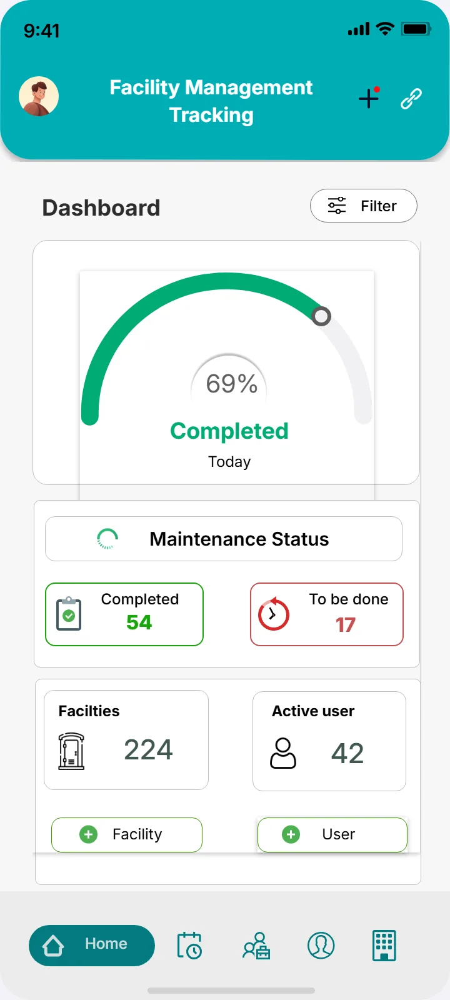
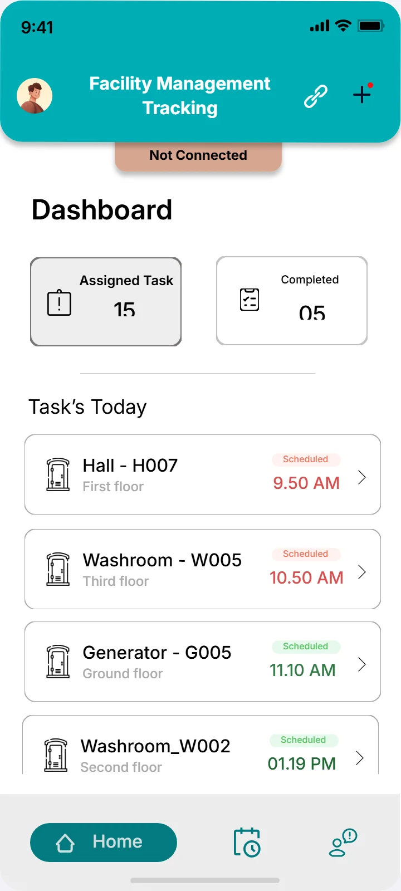
The challenge
Completing a task involves more than marking it done. A worker must identify the correct facility, understand the required work and record the result. Supervisors need to see who is responsible and which work remains outstanding. Device connection adds another dependency. The design challenge is to make those dependencies understandable without turning routine maintenance into a complicated form-filling exercise.
Who it serves
The administrator experience focuses on configuration, assignment and oversight. The field-user experience focuses on today’s tasks and activity recording. This separation allows the same system to support setup and execution without giving both roles the same starting screen.
How the work moves
Administrator
- Create company hierarchy
- Add facility
- Map its identifier
- Assign users and schedule
- Monitor work
- Reassign selected tasks when necessary
Field user
- Review assigned task
- Connect device or choose the available manual path
- Identify facility
- Check in
- Complete checklist and reasons
- Check out
- Review recorded activity
Key decisions
1. The location hierarchy gives tasks a physical context.
Location, building and floor labels help distinguish facilities that may otherwise have similar names. Facility detail screens bring together mapping, users, schedules and maintenance information so the relationships can be reviewed in one place.
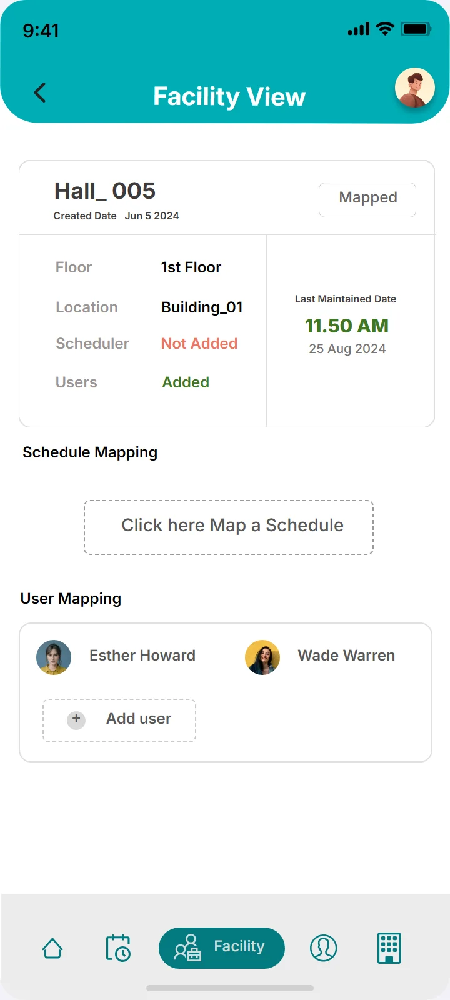
2. Connection state is part of the workflow.
The file includes device discovery, connected, disconnected, reconnecting and low-battery screens. It also shows a choice between connecting an eBaton and recording manually when no device is connected. This makes the dependency visible rather than leaving users to guess why an action is unavailable.
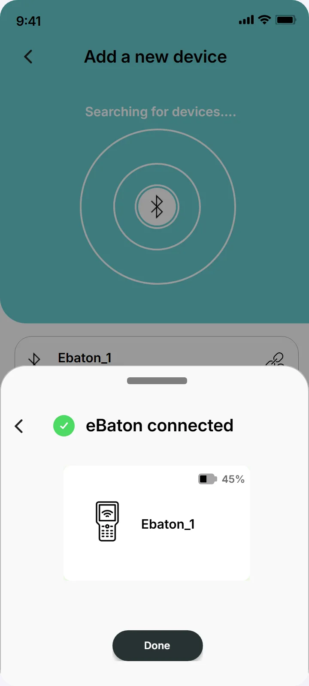
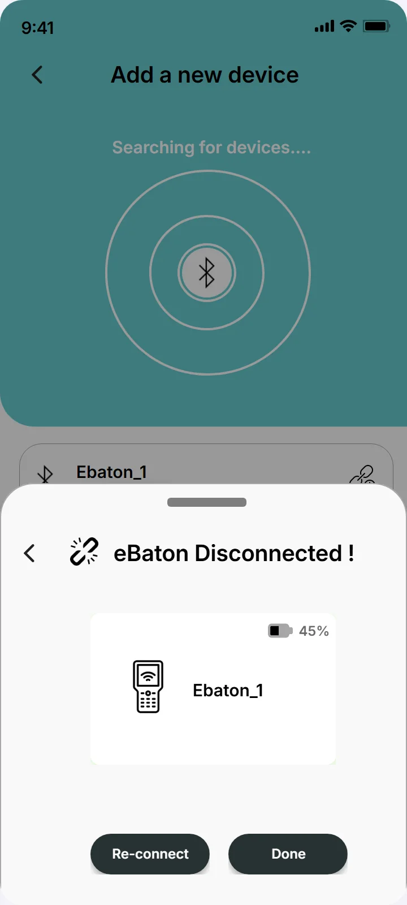
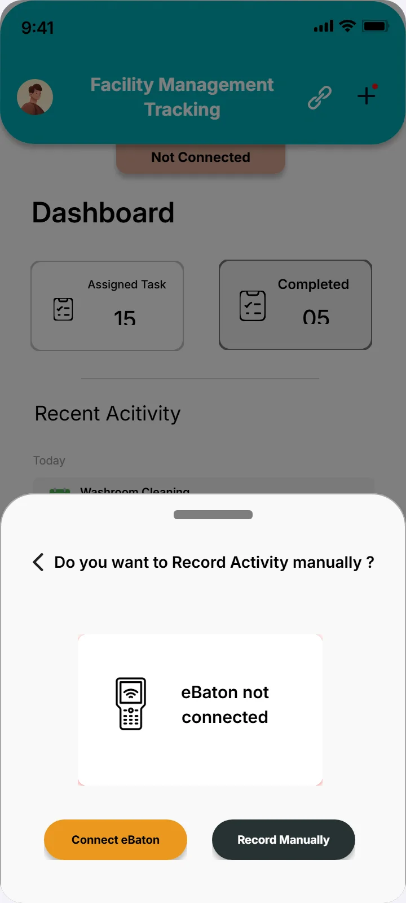
3. Checklists turn completion into a more specific record.
Task screens associate the facility, user, time and device with checklist answers and reasons. The check-in and check-out sequence provides a clear distinction between beginning work and recording its completion.
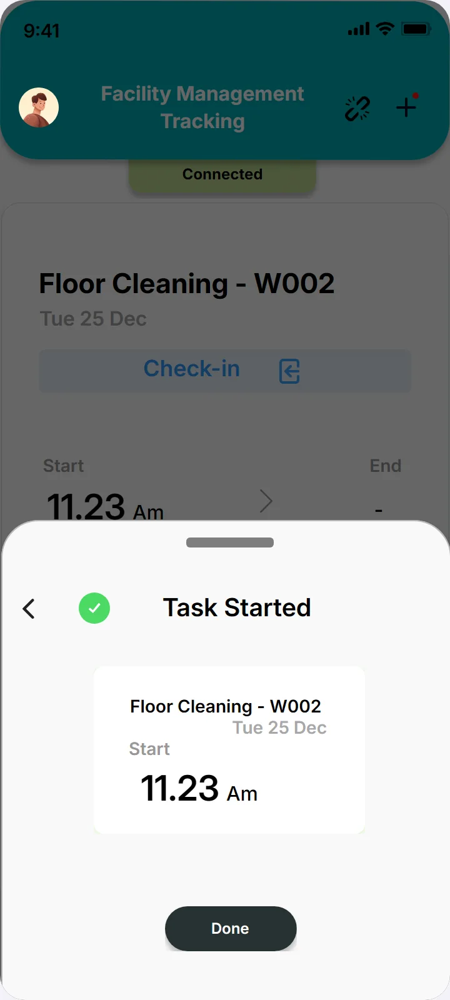
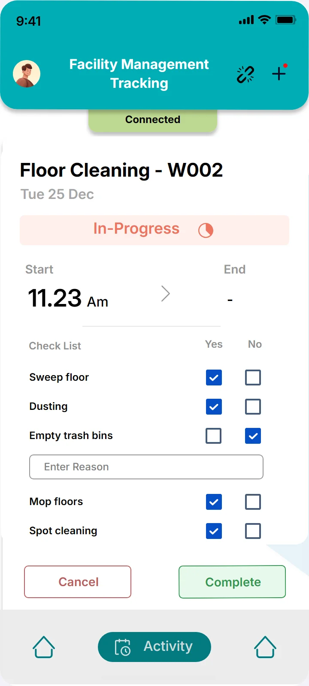
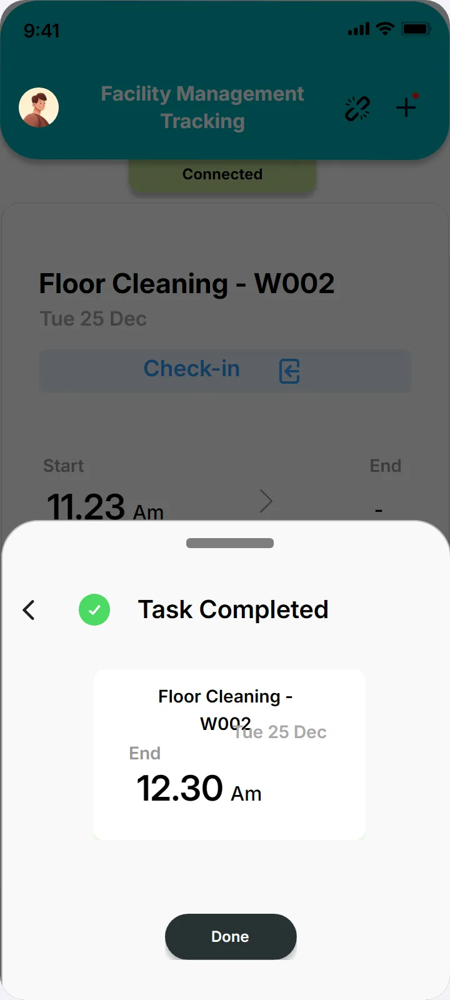
4. Assignment can change without losing the task context.
The user-swapping flow selects a current assignee, a backup assignee and the relevant tasks. Complaint screens extend the activity record with a category, facility or asset, message and up to two photographs.
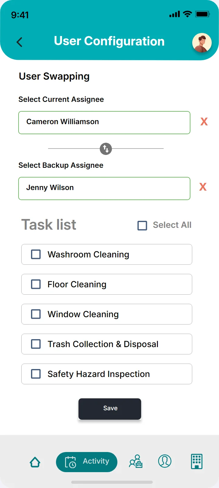
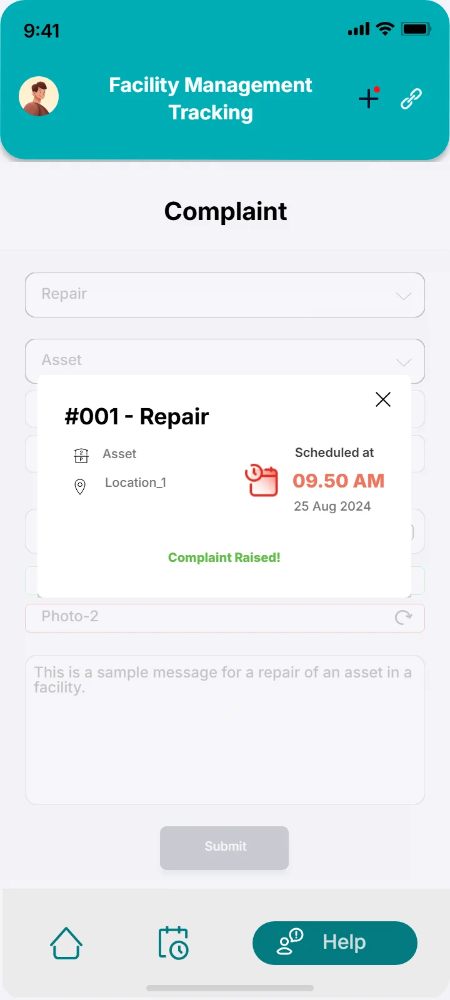
What the design achieves, and how to test it
The design connects configuration, task execution and supervisory review in a coherent operational model. Validation should cover a complete maintenance task, a disconnected device, an unknown facility identifier and a reassignment. Measure completion errors, recovery success and whether supervisors can correctly identify outstanding work.
The strongest part of this project is the connection between digital records and physical work.
Clear facility identity, visible device state and explicit completion steps all contribute to a record that another person can understand later.
Design decisions
Four decisions shaped how facility work is set up, carried out and handed over. Each story follows the same structure: the situation before, the alternatives, the reasoning and trade-off, what I designed, and what can honestly be said about the result.
1Device state you can see, with a manual way out
A banner shows the eBaton state; if it's not connected, staff can still record manually.
Strategic · Read story
2Check-in, checklist, check-out
Completion is a record of what was done, not a single "done" tap.
Tactical · Read story
3Facilities placed in a location hierarchy
Location, building and floor tell "Hall_005" apart from every other hall.
Strategic · Read story
4Reassigning work in one step
Pick the current and backup person, then the tasks to move.
Tactical · Read story
- ExplorationWireframes and earlier frames from my Figma file
- ConceptualAn option described for comparison, not a design I made
- Final designThe hi-fi screens
Decision 01 · Strategic
Why device state is always visible, with a manual way out
A Bluetooth device that silently drops is the fastest way to lose a day's maintenance records.
Before the decision
Earlier record screens in my file were built around the eBaton: "Record data" showed the connected device, then asked the user to scan the facility RFID. Recording depended on the device being there.
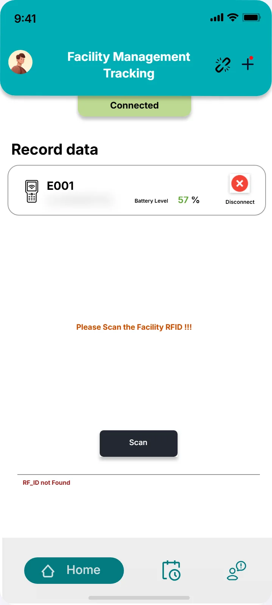
The turning point
Reasoning
Physical devices fail in the field. Showing the state up front explains what's possible, and a manual path keeps the work moving instead of losing the record.
Trade-off
Manual entries carry less proof than an eBaton scan, so supervisors need to tell the two apart in the activity record.
What I designed
- Always visibleDevice state under the header
- A way outConnect, or record manually
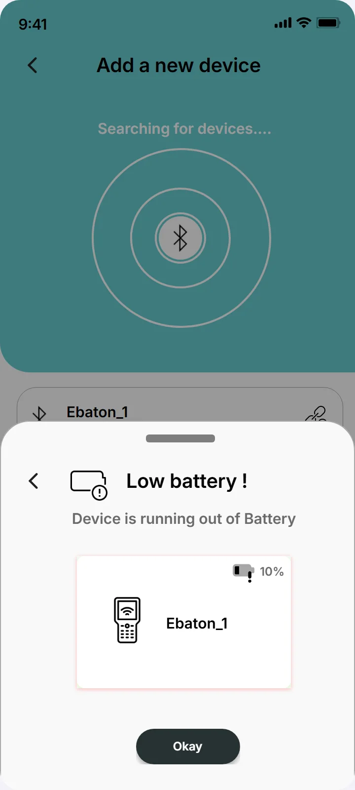
- ConnectedDevice and battery level
- DisconnectedRe-connect or carry on
- Low batteryA warning before it dies
Result
Device problems are explained where they happen and never block a record. Recovery success after a disconnect is the measure to test.
- Visibility of system status
- User control and freedom
- Error recovery
Decision 02 · Tactical
Why a task is checked in, checked off and checked out
"Done" doesn't tell a supervisor whether the bins were emptied or only the floor was mopped.
Before the decision
The earlier manual record screen collected location, floor, facility and a free-text comment, then a single Done button.
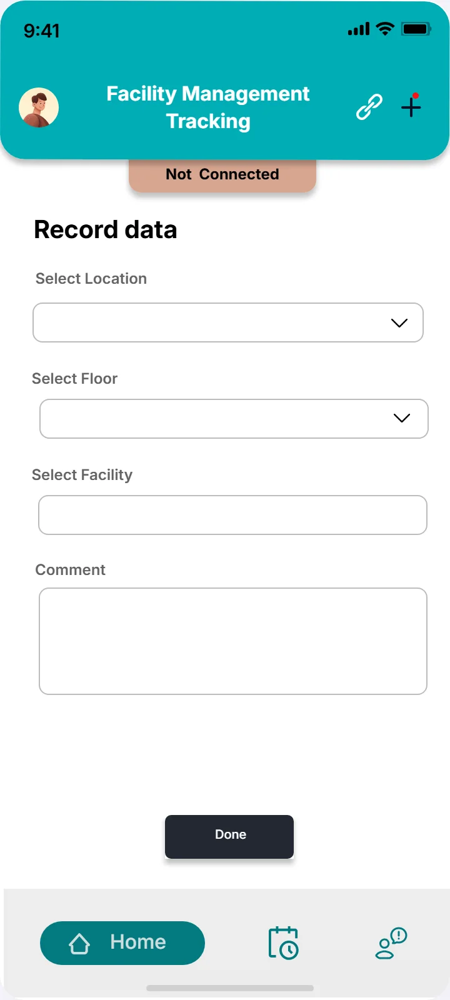
The turning point
Reasoning
A record is only useful if someone else can read it later. Splitting start, checklist and finish captures what happened, when, and why anything was skipped.
Trade-off
Routine tasks take longer to record, so the checklist has to stay short and the confirmations quick.
What I designed
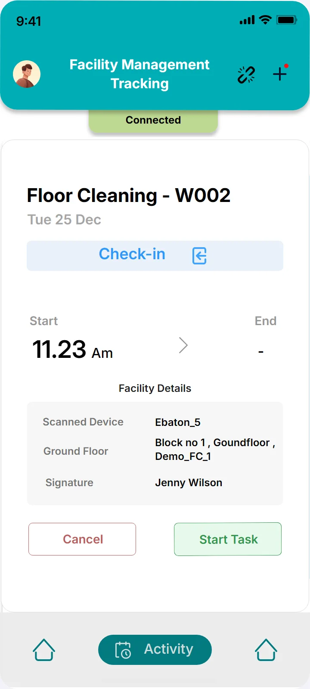
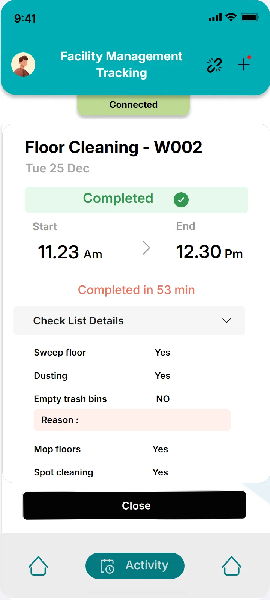
- Check inFacility details and start time
- ChecklistYes/No and a reason
- CompletedDuration and the full record
Result
Each completed task records its start, end, duration, checklist answers and reasons. Completion errors are the measure to test.
- Visibility of system status
- Error prevention
- Recognition rather than recall
Decision 03 · Strategic
Why every facility sits in a location hierarchy
A site can have a dozen washrooms. "Washroom" alone doesn't tell a cleaner which one.
Before the decision
The earliest wireframes in my file, the "before" frames, set out company creation by levels and a location form of region, building and floor.
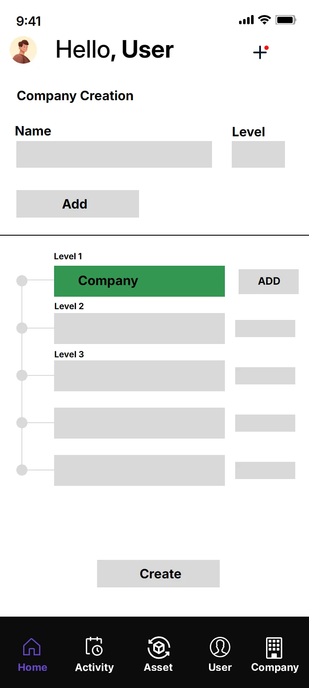
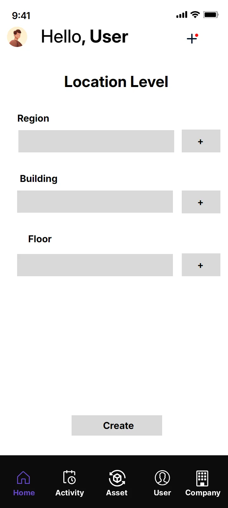
The turning point
Reasoning
Field staff find things by place. Carrying location, building and floor on every facility removes guesswork from the task itself.
Trade-off
Administrators have to build the hierarchy before anyone can work, and changes to a site ripple through it.
What I designed
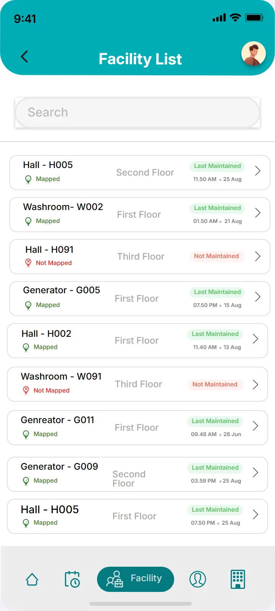
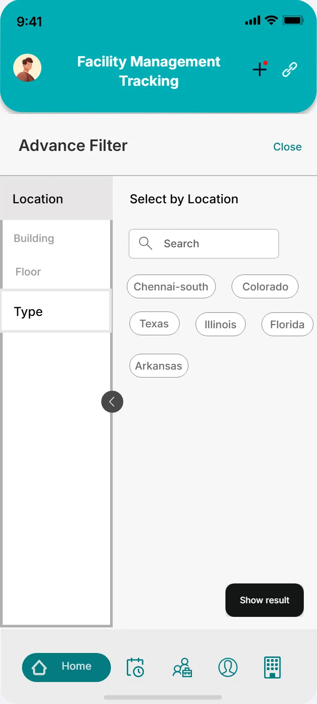
- ListFloor and maintenance status per facility
- ViewPlace, schedule and people together
- FilterBy location, building, floor, type
Result
Facilities are identified by place everywhere they appear. Wrong-facility check-ins would show whether this works.
- Match between system and real world
- Recognition rather than recall
- Information hierarchy
Decision 04 · Tactical
Why reassigning work happens in one step
When someone calls in sick, their tasks shouldn't have to be moved one by one.
Before the decision
The scheduler lists tasks with their assignee and time. Without a swap flow, covering for an absent worker would mean editing each scheduled task.
The turning point
Reasoning
Supervisors think "Jenny covers for Cameron today", not "edit task 14". One flow that mirrors that sentence is faster and harder to get half-done.
Trade-off
Bulk actions magnify mistakes, so the swap asks for confirmation and names both people before it runs.
What I designed
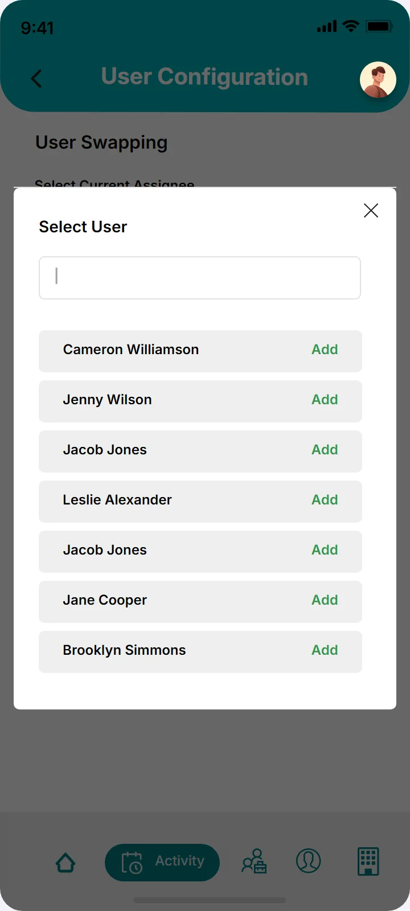
- WhoPick the current and backup person
- WhatChoose the tasks to move
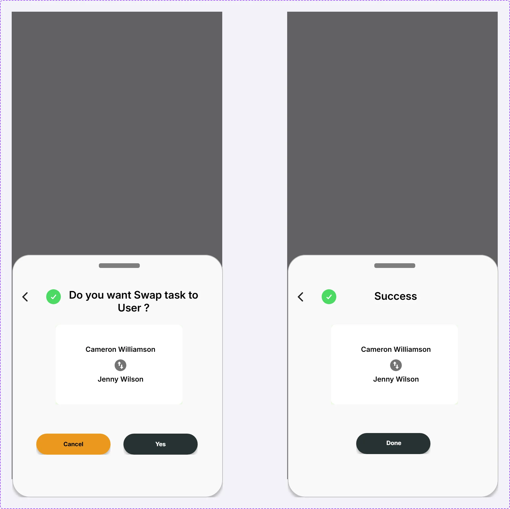
Result
A whole day's tasks can move to a backup person in one confirmed step. Correct reassignment on the first try is the measure to test.
- Flexibility and efficiency of use
- Error prevention
- Match between system and real world
The explorations that shaped the final experience
Frames from my Figma file: the "before" wireframes, dashboard variants and the move from a record form to a check-in flow.
- Wireframe
SetupCompany levels as a tree.
- Wireframe
SetupRegion, building, floor.
- Hi-fi
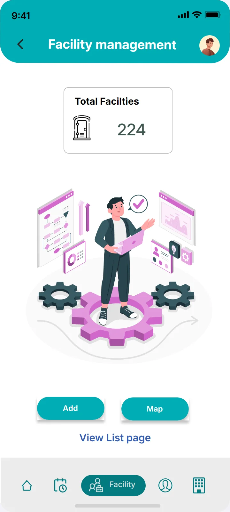
SetupFacilities, then add or map.
- Variant
DashboardCompletion gauge and counts.
- Draft v2
DashboardRefined spacing and labels.
- Hi-fi
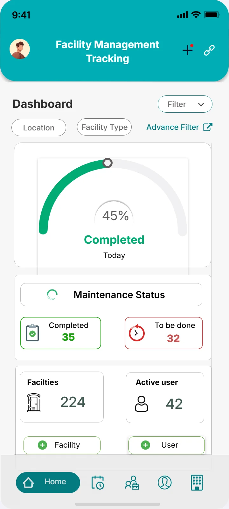
DashboardFilters by place and type.
- Earlier
RecordingDevice, then scan RFID.
- Earlier
RecordingA form and a comment.
- Hi-fi
RecordingCheck in, checklist, check out.
Designing consistency across setup and field work
These values come from the hi-fi frames in the Figma file.
Typography · Inter
- Floor Cleaning – W002Inter Bold 16–18 · task and screen titles
- 11.23 amInter Medium 22 · times
- Washroom Cleaning · First FloorInter Medium / Semi Bold 12 · list items
- LAST MAINTENANCE 20 AUG 2024Inter Semi Bold 7–8 · tags and metadata
Colour and meaning
- #00ADB5Brand teal · header, nav
- #222831Primary buttons
- #E8F9EDCompleted / connected tint
- #3E7823Completed text
- #FF1010Not connected, to do
- #EE755FScheduled time
- #0074B5Links, Add
- #F0F0F3Surfaces
Contrast check
I checked the main pairs against WCAG 2.2 text contrast. Several fall short and are on the refinement list.
| Pair | Ratio | AA text |
|---|---|---|
| White on primary #222222 | 15.9:1 | Pass |
| Completed #3E7823 on #E8F9ED | 4.9:1 | Pass |
| Secondary text #7E7B7B on white | 4.2:1 | Fail |
| Not connected #FF1010 on white | 3.9:1 | Fail |
| Scheduled time #EE755F on white | 2.9:1 | Fail |
| White on brand teal #00ADB5 | 2.7:1 | Fail |
| Placeholder #AAAAAA on white | 2.3:1 | Fail |